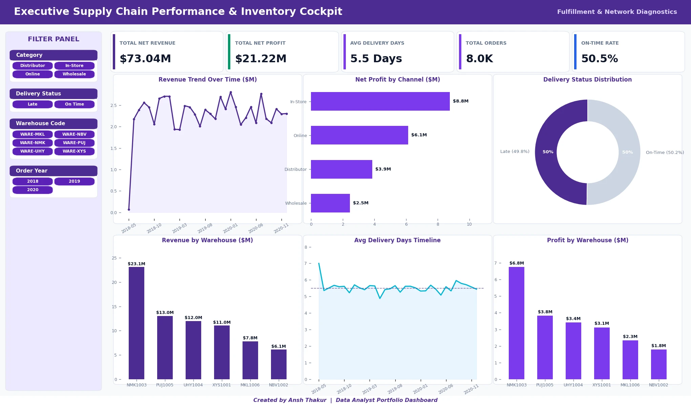

Supply Chain Performance Analysis
1 Business Problem
Half of all orders miss the 5-day delivery target, with $41M of revenue exposed. The leadership asks: is one bad warehouse causing this — or is the lateness network-wide? A misdirected per-site improvement project would burn budget on the wrong fix.
2 Data
7,991 transactional orders across 2018–2020, 47 SKUs, six warehouses. Raw CSV cleaned in Python; engineered metrics: delivery_days, order-to-ship_days, and profit_margin. Loaded into a typed MySQL schema for analytical querying.
3 Analysis
Ranked warehouses by late-order count, then decomposed delivery-time variance between sites vs. within sites. Ran ABC classification across the 47-SKU catalogue and a 32-month revenue / margin stability audit.
4 Key Findings
The largest warehouse tops raw late-order count because it handles 31.4% of all volume — not because it is slow. All six warehouses show an equivalent 2.82–2.88 day spread. A per-site project would have fixed nothing.
5 Business Recommendation
Do not run a per-warehouse improvement programme — lateness is systemic and upstream (scheduling / dispatch), not localisable to one site. Instead, investigate the upstream order-to-ship process. Separately, the discount policy needs no cap (margin is stable at ~37% across discount bands) and a 2020 growth stall worth escalation.